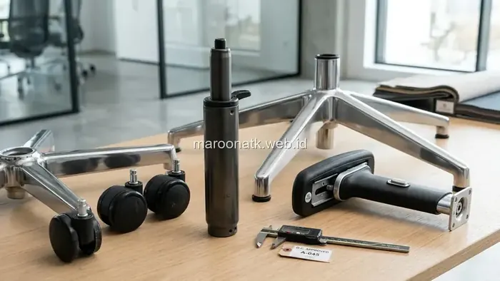

Pentingnya Memilih Supplier Furniture Kantor Bergaransi Jelas
Jawaban singkat: Memilih supplier furniture kantor di Jakarta yang tepat tidak hanya didasarkan pada harga penawaran terendah, melainkan kejelasan spesifikasi material, transparansi cakupan garansi komponen (seperti hidrolik gas lift dan roda kursi), ketersediaan suku cadang pengganti, serta kesiapan layanan purna jual (after-sales) yang akuntabel.
Pengadaan perabot kantor—seperti kursi kerja staf, meja workstation, lemari arsip baja, hingga meja rapat—merupakan investasi modal (CapEx) jangka menengah hingga panjang bagi korporasi. Namun, salah satu kendala klasik yang sering dihadapi divisi General Affairs (GA) dan Purchasing setelah pembelian adalah rusaknya komponen mekanik bergerak dalam hitungan bulan, seperti kursi yang turun sendiri atau roda yang patah.
Ketika vendor penjual tidak menyediakan layanan purna jual atau ketiadaan suku cadang pengganti, perusahaan terpaksa membeli unit baru yang membebani anggaran. Oleh karena itu, bermitra dengan supplier furniture kantor yang memiliki komitmen garansi resmi dan rantai pasok sparepart yang jelas adalah langkah preventif mutlak.

Rekomendasi Kursi Kantor Ergonomis Terpopuler Menghindari Sakit Punggung
Panduan memilih fitur kursi kerja dengan dukungan lumbar dan sandaran dinamis untuk kenyamanan staf.
Kriteria Kritis yang Wajib Dievaluasi Procurement
Garansi tidak cukup sekadar dicantumkan sebagai janji lisan. Tim pengadaan perlu memverifikasi beberapa parameter berikut secara rinci:
1. Batasan dan Cakupan Garansi Komponen Bergerak
Periksa klausul perjanjian garansi: apakah garansi mencakup silinder hidrolik (gas lift), pelat mekanisme kemiringan (tilting mechanism), dan rangka kaki bintang (base)? Pastikan durasi garansi (misalnya 1 hingga 2 tahun) tercantum tertulis dalam dokumen penawaran.
2. Ketersediaan Suku Cadang Pengganti (Sparepart)
Supplier yang profesional memiliki stok suku cadang modular seperti castor wheel (roda nilon/PU), gas lift Class 3/4, dan armrest pad cadangan. Ketersediaan ini memastikan perbaikan dapat dilakukan dengan cepat di lokasi tanpa perlu membuang unit kursi yang masih baik rangkanya.
3. Kesiapan Logistik dan Perakitan di Tempat
Pengiriman furniture kantor dalam jumlah banyak memerlukan penanganan khusus. Tanyakan apakah vendor menyediakan armada tertutup dan teknisi perakitan berpengalaman untuk memastikan meja dan kursi dirakit dengan standar kekokohan yang presisi.

Pemeriksaan kualitas komponen mekanik seperti silinder gas lift dan roda kursi membantu meminimalisir risiko kerusakan dini.

Panduan Teknis Memilih Material Pengadaan Furniture Kantor yang Awet
Komparasi material particle board, MDF, plywood HPL, dan rangka baja untuk perabot korporat tahan lama.
Tabel Matriks Evaluasi Supplier Furniture Kantor
Gunakan daftar periksa berikut untuk membandingkan proposal dari calon mitra penyedia furniture kantor:
| Kriteria Evaluasi | Hal yang Perlu Dicek dan Dikonfirmasi |
|---|---|
| Legalitas Perusahaan | Identitas PT resmi, NIB, NPWP, dan status Pengusaha Kena Pajak (PKP) |
| Kejelasan Spesifikasi | Detail material papan, jenis busa dudukan, ketebalan rangka baja, dan dimensi presisi |
| Cakupan Garansi | Durasi waktu tertulis serta kondisi yang ditanggung vs kondisi di luar garansi |
| Garansi Hidrolik | Kebijakan garansi silinder gas lift terhadap kebocoran tekanan udara |
| Suku Cadang Roda | Ketersediaan penggantian roda nilon atau polyurethane (PU) yang kompatibel |
| Ketersediaan Sparepart | Kesiapan komponen armrest, mekanik kemiringan, dan aksesoris modular lainnya |
| Layanan After-Sales | Kejelasan alur penanganan komplain dan kecepatan respon teknisi perbaikan |
| Pengiriman Logistik | Cakupan area pengiriman di Jakarta & sekitarnya serta estimasi lead time |
| Instalasi & Setting | Ketersediaan layanan perakitan di lokasi kantor untuk pesanan volume besar |
| Dokumen Pengadaan | Penerbitan SPH resmi berkop surat, invoice rapi, BAST, dan e-Faktur PPN 11% |

SOP Pengadaan Furniture Kantor B2B untuk Perusahaan & Instansi
Standard operating procedure tahap seleksi vendor, survey layout ruangan, hingga Berita Acara Serah Terima.
Kemitraan Pengadaan Furniture Bersama MAROON ATK
Sebagai entitas pengadaan perlengkapan kantor berbadan hukum resmi, MAROON ATK siap mendampingi kebutuhan peremajaan dan penataan interior kantor korporasi Anda dengan layanan terintegrasi:
- Konsultasi Spesifikasi Produk: Tim kami siap memberikan rekomendasi model kursi ergonomis, meja kerja staf, dan lemari arsip sesuai anggaran dan luas ruangan.
- Transparansi Kebijakan Garansi: Setiap penawaran dilengkapi rincian ketentuan garansi komponen teknis yang jelas.
- Kepatuhan Administrasi B2B: Menyediakan SPH berkop perusahaan, faktur pajak resmi e-Faktur PPN 11%, dan dokumen BAST untuk kelancaran audit akuntansi.
Konsultasikan Pengadaan Furniture Kantor Perusahaan Anda
Layanan SPH Cepat, Dukungan Garansi Resmi, dan Kualitas Teruji
Sedang mengevaluasi supplier furniture kantor untuk kebutuhan perusahaan? Konsultasikan spesifikasi, kebutuhan jumlah, garansi, dan dokumen pengadaan bersama MAROON ATK melalui WhatsApp +62 82211221909.
Kesimpulan: Amankan Nilai Investasi Aset Kantor Anda
Rangkuman Keputusan Procurement Furniture
Memilih supplier furniture kantor dengan garansi resmi dan ketersediaan suku cadang adalah proteksi terbaik terhadap anggaran fasilitas perusahaan.
- Periksa Cakupan Rinci: Jangan terpaku pada label garansi umum; pastikan komponen mekanik seperti hidrolik dan roda terlindungi.
- Utamakan Legalitas: Pastikan vendor tertib administrasi dengan dokumen penawaran dan faktur pajak yang sah.
- Konsultasi Terpercaya: MAROON ATK siap menjadi mitra pengadaan furniture kantor yang solutif dan transparan.
Pertanyaan Umum (FAQ) Supplier Furniture Kantor
Hal penting yang perlu dievaluasi mencakup legalitas badan usaha, kejelasan spesifikasi material (seperti rangka baja, ketebalan papan, dan densitas busa), transparansi durasi dan cakupan garansi, ketersediaan komponen suku cadang pengganti, serta kesiapan dokumen penawaran dan perpajakan resmi.
Garansi sparepart (seperti silinder hidrolik gas lift, mekanisme kemiringan, dan roda kursi) melindungi investasi aset kantor agar saat terjadi keausan komponen bergerak, perabot tidak perlu diganti utuh melainkan cukup diperbaiki dengan suku cadang yang kompatibel.
Tanyakan secara rinci komponen apa saja yang ditanggung (apakah mencakup hidrolik, rangka kaki, atau mekanisme reclining), berapa lama durasi perlindungannya, bagaimana alur prosedur klaimnya, serta apakah vendor menyediakan suku cadang cadangan jika masa garansi telah berakhir.

Arby Ardiansyah
Arby Ardiansyah merupakan praktisi dan penulis konten MAROON ATK yang membahas kebutuhan pengadaan ATK, furniture kantor, teknologi display, dan tata kelola procurement B2B di Indonesia.